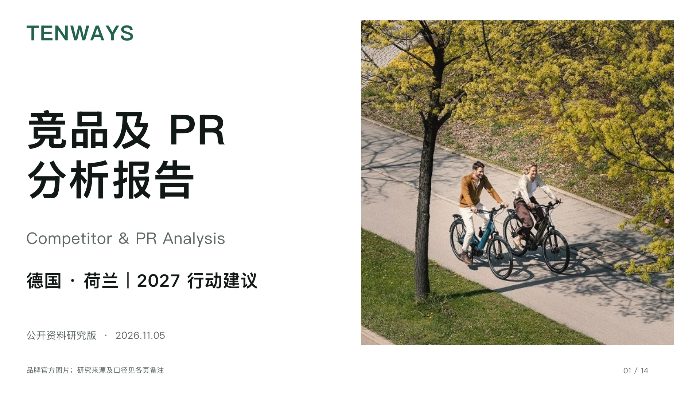

GERMANY & THE NETHERLANDS · 2027
竞品及 PR 分析报告
欧洲趋势、德荷市场与品牌传播，落到下一年的行动。
14 页完整报告
公开资料研究版 · 2026.11.05

TENWAYS 竞品及 PR 分析报告
← → 键盘翻页报告目录
点击任一页开始阅读带走完整报告
下载可编辑的 .pptx 文件，研究来源及分析口径见各页备注。
2027 预算与 KPI 为建议方案，待内部基线确认。
GERMANY & THE NETHERLANDS · 2027
欧洲趋势、德荷市场与品牌传播，落到下一年的行动。
14 页完整报告
公开资料研究版 · 2026.11.05

下载可编辑的 .pptx 文件，研究来源及分析口径见各页备注。
2027 预算与 KPI 为建议方案，待内部基线确认。